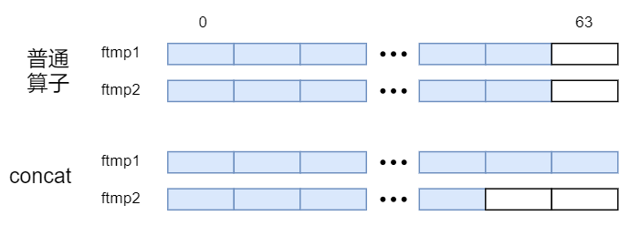
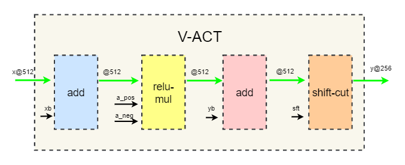

开发部分#
新的指令生成更名为Icraft-CodeGen，其工程内部包括一个可执行程序外壳，实现加载和dump json和raw文件和三个DLL，分别是算子级的codegen，任务级的taskgen以及指令级的instgen，共三级逻辑。其中codegen用于实现各nn算子的操作，包括算子合并和替换、地址分配等，taskgen用于将合并和后算子转换为task序列，instgen则是根据task序列，生成对应的指令序列。
一 总体描述#
1.1 简介#
Icraft-CodeGen组件用于实现将Icraft网络转换为硬件指令的功能。包含可执行程序icraft-generate.exe以及动态依赖库icraft_buyi_codegen.dll、icraft_buyi_taskgen.dll、icraft_buyi_instgen.dll组成。并依赖Icraft::XIR、Icraft::Utils以及Icraft::SimForward。
1.2 功能说明#
以下将根据指令生成组件内部功能的执行顺序对各功能进行介绍：
1.2.1 模式匹配#
相较于之前指令生成的版本对网络算子进行遍历并利用标记信号进行算子的融合方式，当前版本指令生成使用模式匹配的方式对满足要求的pattern进行操作。当硬件有新增计算通路或有新支持的算子，可以不再考虑原本已有的模式，而是直接创建新模式。一方面使可扩展性更高，无需修改原始经过测试的代码，另一方面对于软算子不再需要进行注册，之后Icraft新增软算子对于指令生成组件将没有任何工作量。
目前所包含的pattern有：
rules |
priority |
pattern |
|---|---|---|
act_rule |
1 |
激活 |
addact_rule |
2 |
add+激活 |
add_rule |
1 |
add |
align_axis_rule |
1 |
补通道算子 |
bnact_rule |
2 |
batchnorm+激活 |
bn_rule |
1 |
batchnorm |
concat_rule |
2 |
没有数据搬移的concat，只需通过修改地址即可实现（优先级高于需要搬移的concat） |
concat_real_rule |
1 |
有实际数据搬移的concat |
convact_rule |
2 |
卷积或分组卷积或conv2d_ftmp算子与激活算子的组合 |
convpool_rule |
2 |
卷积或conv2d_ftmp算子与pool算子的组合 |
convrelupool_rule |
3 |
卷积或conv2d_ftmp算子与relu以及pool算子的组合 |
convtransposeact_rule |
2 |
反卷积+激活 |
convtrans_rule |
1 |
反卷积 |
conv_rule |
1 |
卷积或分组卷积或conv2d_ftmp算子 |
copy_rule |
1 |
copy |
dwact_ftmp_rule |
3 |
两个输入都为ftmp的深度可分离卷积+激活（优先级高于卷积） |
dwact_rule |
3 |
深度可分离卷积+激活（优先级高于卷积） |
dw_ftmp_rule |
2 |
两个输入都为ftmp的深度可分离卷积（优先级高于卷积） |
dw_rule |
2 |
深度可分离卷积（优先级高于卷积） |
layernorm_rule |
1 |
layernorm算子 |
matmulact_rule |
2 |
matmul+激活 |
matmul_rule |
1 |
matmul |
multiplyact_rule |
2 |
multiply+激活 |
multiply_rule |
1 |
multiply |
pad_rule |
1 |
pad |
pool_rule |
1 |
pool |
prune_axis_rule |
1 |
去无效通道算子 |
reshape_rule |
1 |
reshape |
slice_rule |
1 |
slice |
split_rule |
2 |
没有数据搬移的split，通过修改地址实现最外层非1维度的切分（优先级高于需要搬移的split） |
transpose_cw_rule |
5 |
align_axis+reshape+transpose+reshape+prune_axis面与通道交换 |
transpose_wh_rule |
1 |
面上维度交换 |
upsample_rule |
1 |
upsample |
expand_rule |
1 |
广播算子，在单个维度上进行广播 |
所有算子匹配完成后会对所有buyi-target的算子进行检查，查看是否匹配到pattern并被替换为hardop。若未替换，则表示匹配失败，抛出异常以便debug。
1.2.2 算子替换#
遍历网络，并根据优先级对上述pattern进行模式匹配，匹配到的算子集会被替换为hardop，并且将相应的算子参数存放在OpInfo中，以便后续生成task序列时使用。
算子替换需要构建HardOp，并对其输入输出以及参数进行赋值，最后通过replaceGroup方法将被匹配到的算子集替换为新构建的hardop。 除外，还需将所需参数存放在相应的OpInfo中。
1.2.3 地址分配#
ParamsMemManage
参数地址分配：首先对hardop的参数进行地址分配，在上述算子替换过程中，所有原始算子的参数已经被赋值到hardop的params中，因此只需遍历网络对所有hardop的params进行地址分配即可完成参数的地址分配。
FtmpETMMemManage
特征图在ETM（ExternalMem）上的地址分配：根据各算子的target类型对算子的输入输出进行ETM地址分配（目前对BuyiTargte和FPGATarget的算子进行地址分配）。
SpecialFtmpTreatment
对特殊算子的输入输出地址进行处理：对于concat算子，修改其各输入地址，第一个输入基地址指向输出地址，依次连续存放其余输入；对于split，修改其输出地址，第一个输出基地址指向输入地址，依次连续存放其余输出；对于reshape算子，其输出地址指向输入。
FtmpOcmMemManage
特征图在OCM（OnChipMem）上的地址分配：当前架构有2MB的片上存储单元，根据存放需求。
目前指令生成部分与OCM优化部分实现了解耦，后续可以支持开发新的优化方案而不依赖于指令生成组件的状态。
目前有三种分配方式： 1.以已知最优的方式对各特征图进行打分，并按分数由高到低进行ocm的地址分配，各特征图存放进ocm后对其所占的空间和时间片进行标记，保证各特征图的时间片和空间均无重叠即可完成ocm的地址分配。 2.采用局部最优方案，每个节点记录M个最优（读写数据量最大的前M种情况），第N个节点分别在前N-1个节点各自的前M个最优情况下进行分配，并记录该节点的M个最优情况，以此类推，最后一个节点与前面所有节点的前M个最优进行组合，选取最终的最优解。 3.按顺序遍历所有的特征图，能存放时即分配OCM地址，若遍历到某个特征图时发现OCM空间不够，则对比该特征图与已分配的特征图的得分，若该特征图得分较高，则按顺序踢出第一个得分较低的特征图，否则不给该特征图分配OCM空间。
后续如果有其余优化方式，可以直接加入到指令生成组件中，指令生成在编译阶段可以针对每个网络根据每种算法的最终结果选取最优分配方案。或者用户可以制定已有的优化方案。
OCM的带宽是DDR带宽的2倍，因此使用OCM能在一定程度上减少DDR的带宽压力，从而增加网络在硬件上的运行效率。
SetFtmpMemInfo
待所有特征图都分配好地址后，将分配好的ftmp的地址存放在各算子的info上，以便后续生成指令。
PrintMemAssignInfo
将所分配的地址信息（包括参数和特征图）存放在log中，以便后续debug，存放文件为“generated_netname.log”。
备注
由于fireby的限制，需要在开头预留64个ETM（外部存储，此处为DDR）地址。
地址分配以byte为单位，json文件中的地址也为byte地址。因此对于存放格式有一定的要求：每个算子的参数以及输入输出特征图需要以ETM（64byte）第一个byte作为起始地址，即对齐64byte地址。
备注
对于concat的输入以及split的输出，由于要拼接成一个完整特征图或需要从一个完整特征图分离成多个特征图，因此多个输入或多个输出需要连续存放。

1.2.4 task序列#
task列表：
数据搬移类task：
AssignTaskAssignWithPadTask
用于实现各个通路上的数据搬移，布衣中包含的memory类型：
MemType |
说明 |
|---|---|
etm |
外部存储 |
klm |
MPE内存放kernel的本地存储 |
xlm |
MPE内存放ifm的本地存储 |
ylm |
MPE内存放ofm的本地存储 |
plm |
VPE内存放pooling结果的本地存储 |
olm |
one引擎内的本地存储 |
ocm |
片上共享存储 |
计算类task:
MulTaskAddTaskMatrixMulTaskMpeConvTaskMpeAccTaskVpeAccToEtmTaskVpeAccToPlmTaskPoolMaxTaskPoolAvgTaskVlcuTaskVactToEtmTaskVactToPlmTaskResizeTask
task列表详见：
1.2.5 指令映射#
该组件支持以下结构的指令映射：
opConvPoolCompile：（带pool的卷积）；opConvCompile：（不带pool的卷积），支持kernel_w*kernel_h大于2048；opDwCompile：（深度可分离卷积）；opDwFtmpCompile：（两个ftmp的深度可分离卷积）；opEltwiseCompile：（Add算子，残差加，支持接激活，支持两个ftmp的加，或一个ftmp与常数tensor的加，没有顺序限制）；opPoolCompile：（单独的池化），支持pool_w*pool_h大于2048的avgpool；opScaleCompile：（向量乘，即IR中的batchnorm）；opResizeCompile：（整数倍nearest的resize，即IR中的upsample以及bilinear的resize）；opCopyCompile：（复制ftmp）；opConcatCompile：（拼接制定维度的两个ftmp或一个ftmp与一个常数tensor，没有顺序限制）；opGroupConvCompile：（分组卷积）opPadCompile：（单独的pad）opConvTransposeCompile：（反卷积）opActCompile：（单独的激活）opSacMulCompile：（multiply，支持两个ftmp的乘，或一个ftmp与常数tensor的乘，没有顺序限制）opMatMulCompile：（矩阵乘，支持两个ftmp的矩阵乘，或一个ftmp与常数tensor的矩阵乘，没有顺序限制）opSliceCompile：（切片）opTransposeCWCompile：（最后两个维度交换的transpose）opTransposeWHCompile：（面上两个维度交换的transpose）opLNCompile：（生成layernorm算子的指令）opPruneAxisCompile：（生成去无效通道算子的指令）opAlignAxisCompile：（生成补无效通道算子的指令）opExpandCompile：（生成广播算子的指令）
二 优化与约束#
2.1 优化配置说明#
当前指令生成组件所支持的优化有以下几种：
优化选项 |
优化力度 |
优化内容 |
说明 |
|---|---|---|---|
ocmopt |
-1 |
-1：遍历所有ocm的优化方案，选取优化得分最高的方案；0：关闭ocm优化；1：选择优化方案1；2：选择优化方案2；3.选择方案3； |
Ocm=2MB，数据是否存放在ocm中，减小etm带宽压力 |
xlmopt |
2 |
通道折叠 |
当面较小，通道较大时，将通道折叠到面上，减少tile数 |
3 |
面上划tile分配到多个MPE并行计算 |
避免只使用一个MPE计算，其他MPE空闲的情况 |
|
klmopt |
2 |
合并Etm2Klm task |
当相邻两个Etm2Klm task满足跳转一致，地址连续则合并为一个Etm2Klm task |
3 |
调整Etm2Klm位置 |
将Etm2Klm所写的klm相邻的task放在一起，加快读写速度 |
|
icropt |
1 |
消除重复dii指令 |
备注
目前ocm优化方案有3个，但是方案2对于算子数量较多的网络，其编译时间较长，因此我们建议当用户网络的算子个数大于500时，可以直接通过–ocmopt 1来选定优化方案1。编译时报出信息：”Please note: ops.size = {}, it is not suitable to use scheme 2 and is skipped. “
2.2 性能优化说明#
Add算子
待优化：原实现方案为实现通用性，定位C位置，将其之前的当作loop，对C与c之间的维度进行划tile操作（其step0=1）；当C与c作为最后两维时，每个tile只有1，因此导致共有loop*Ct个tile，导致指令数量巨大，效率巨低。优化方案：为解决该问题，对于当C与c作为最后两维的输入，对loop进行划tile操作（其step0=Ct），因此大大减少了tile的数量，提高了效率。
Multiply算子
同Add算子：
2.3 约束说明#
截位限制:
目前指令生成支持relu和查表两种激活方式，其中relu通过激活模块实现，其余非线性激活可使用查表的方式实现。激活模块不仅实现激活功能，还肩负截位功能，对于所有需要做乘法运算的算子，无论是否与relu合并，都需要经过激活模块进行截位操作。量化阶段会根据硬件截位需求，提供相应满足要求的量化参数。激活模块如下图所示（以8bit模式为例）：

利用MPE完成乘累加的算子，将经历两次显示截位和两次隐式截位。以8bit数据为例，乘累加完数据位宽为21bit，经过第一次截位pre_cut后保留16bit，再与正负半轴系数（8bit）乘积后强行截掉低8bit，保留高16bit，再加bias，保留低16bit，最后根据第二次截位post_cut（上图中的sft）将数据截位8bit。
备注
\(m×2^{-exp}\)，scale包含两个参数：M和exp。
Add算子
参数：alpha和beta；量化参数：alpha_scale = beta_scale。截位：只截位一次，cut = alpha_scale.exp - qbits。正负半轴系数：nega = (有relu) ? alpha_scale.m * relu.alpha : alpha_scale.m; posa = alpha_scale.m。
对于add算子，其量化系数记录在alpha和beta中，因此两个ftmp的加与ftmp与常数tensor的截位方式相同。
Batchnorm算子
参数：variance和mean；量化参数：variance_scale = mean_scale。截位：只截位一次，cut = mean_scale.exp - qbits。正负半轴系数：nega = (有relu) ? mean_scale.m * relu.alpha : mean_scale.m; posa = mean_scale.m。
Conv2d类算子（卷积、分组卷积、反卷积）
参数：weights和bias；量化参数：weights_scale、bias_scale。截位：两次截位：pre_cut = k_exp - b_exp; post_cut = b_exp - qbits。正负半轴系数：nega = (有relu) ? bias_scale.m * relu.alpha : bias_scale.m; posa = bias_scale.m。
Conv2d_ftmp类算子（卷积、分组卷积）
参数：bias可选；量化参数：cut_scale。截位：两次截位：pre_cut = (scale_exp >= 5 + qbits) ? 5 : (scale_exp - qbits); post_cut = scale_exp - pre_cut - qbits。正负半轴系数：nega = (有relu) ? cut_scale.m * relu.alpha : cut_scale.m; posa = cut_scale.m。
DW算子
参数：weights和bias；量化参数：weights_scale、bias_scale。截位：一次截位: post_cut = b_exp - qbits。正负半轴系数：nega = (有relu) ? bias_scale.m * relu.alpha : bias_scale.m; posa = bias_scale.m。
DW_ftmp算子
参数：bias可选；量化参数：cut_scale。截位：一次截位：post_cut = cut_exp - qbits。正负半轴系数：nega = (有relu) ? bias_scale.m * relu.alpha : bias_scale.m; posa = bias_scale.m。
Matmul算子
参数：weights和bias；量化参数：weights_scale、b_scale（两个ftmp矩阵乘：cut_scale; ftmp乘常数：bias_scale）。截位：两次截位：pre_cut = k_exp - b_exp; post_cut = b_exp - qbits。正负半轴系数：nega = (有relu) ? b_scale.m * relu.alpha : b_scale.m; posa = b_scale.m。
Multiply算子
参数：params；量化参数：b_scale（两个ftmp矩阵乘：cut_scale; ftmp乘常数: params_scale）。截位：只截位一次： cut = b_exp - qbits。正负半轴系数：nega = (有relu) ? b_scale.m * relu.alpha : b_scale.m; posa = b_scale.m。
位宽限制:
对于8bit模式，布衣硬件posa和nega只有8bit，post_cut只有4bit。 对于ETM，矩形寻址的w/h/ws/hs的位宽为16bit，对于LM，矩形寻址的w/h/ws/hs位宽为11bit；其中tile的unit参数，只有针对ETM时可以配置为1，2，4，8，16，32，对于LM的unit只能是32。对于OCM，矩形寻址的w/h/ws/hs的位宽为16bit，unit只能是32。
更多算子的限制可查看：
三 测试#
3.1 单元测试#
pattern测试:
TEST_CASE("conv-relu-maxpool", "[pattern]")TEST_CASE("1-act-avgpool-upsample-act", "[pattern]")TEST_CASE("2-add-addact-bn-bnact", "[pattern]")TEST_CASE("3-conv-conv-pool-pool-conv-act-pool", "[pattern]")TEST_CASE("4-convtrans-convtrans-act-pool", "[pattern]")TEST_CASE("5-dw-dw-act-pad-split", "[pattern]")TEST_CASE("6-copy-concat-slice-reshape", "[pattern]")TEST_CASE("7-multiply-multiply-act", "[pattern]")TEST_CASE("8-matmul-matmul-act", "[pattern]")TEST_CASE("makeNetwork", "[pattern]")
MemManage测试:
TEST_CASE("params-mem-manage", "[mem]")：参数的分配检查，参数全部放在ExternalMem上TEST_CASE("ftmp-mem-manage", "[mem]")：特征图在ExternalMem上的分配检查TEST_CASE("ocm-mem-manage", "[mem]")：特征图在OnChipMem上的分配检查TEST_CASE("ocm-info-mem-manage", "[mem]")：检查OnChipMem上的分配信息是否正确传递给buyi-taskgen
算子测试:
TEST_CASE("conv2d_ftmp-relu-maxpool", "[op]")：conv_ftmp的算子功能测试TEST_CASE("transpose_WH", "[op]")：面上HW维度交换的transpose算子功能测试，ftmp小尺寸TEST_CASE("transpose_WH-1", "[op]")：面上HW维度交换的transpose算子功能测试，ftmp大尺寸TEST_CASE("transpose_CtW", "[op]")：面上Ct与W维度交换的transpose算子功能测试TEST_CASE("add_const-1", "[op]")：加常数的功能测试TEST_CASE("concat_const-1", "[op]")：拼接ftmp与常数的功能测试TEST_CASE("concat_const-2", "[op]")：拼接ftmp与常数的功能测试TEST_CASE("align_prune-01", "[op]")：去通道和补通道算子的功能测试（用于实现软硬转换）
3.2 组件测试#
四 特别说明#
4.1 绕开硬件bug#
olm读写地址相同时写优先级高:
当存在wolm1->rolm1->wolm2->rolm2…的情况，本应先完成第一组wolm1->rolm1再完成第二组wolm2->rolm2，但是硬件bug导致前一个rolm1的地址与后一个wolm2的地址相同时，wolm2的优先级更高， 因此会导致第二组的wolm2先执行，第一组的rolm1后执行，从而导致读取数据错误；为避免这种情况，需要避免前一个rolm1的地址与后一个wolm2的地址相同的task，注意需要通过地址偏移来避免。